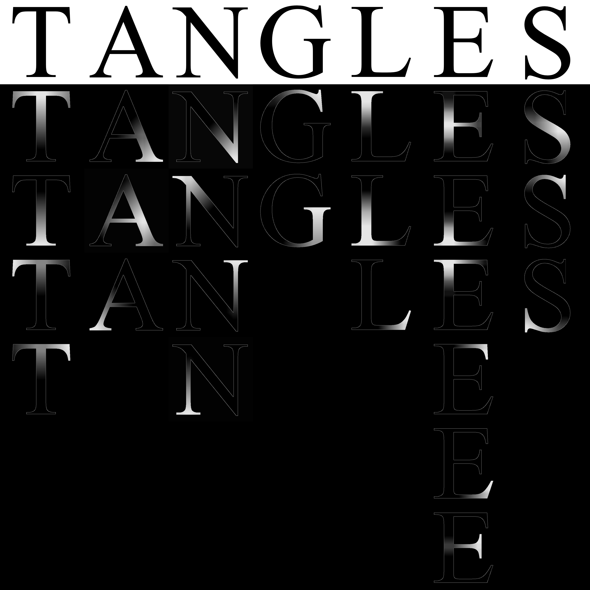

Tangles in Images I#
(Michael Hermann)
In this tutorial we explore the use of tangles for image processing, more specific, as a potential preprocessing step for the task of Image Segmentation or Image Understanding.
If we want a computer to ‘understand’ an image, usually the first step - potentially after some low-level preparations - is to partition the image into regions corresponding to objects or otherwise semantically meaningful parts (for example ‘foreground’ and ‘background’ …). The goal of mage understanding is to find out what these objects and regions actually are and thereby allow a computer to automatically understand the content and meaning of an image. Image Understanding looks like a quite hard task. A tangle based approach, used as an enhanced method for hierarchical and fuzzy Image Segmentation, could be a helpful sub-step: Tangles do not only provide a (soft) partition of the image into regions but additionally are able to describe spatial relations between these regions. Moreover, a tangle of an image does not have to be a region that is disjoint to other regions or the remaining image. The fuzzy nature of structures detectable by tangles allows to interpret a tangle as some kind of hot spot (a subset of interest) within an image without being forced to specify an exact border around an interesting region. Tangles can be seen as some kind of attention mechanism that might be beneficially integrated into powerful higher level methods.
Let us shortly recap what tangles actually are and how they can be used to analyse structured data sets:
Tangles provide a way to identify coherent subsets of a data set \(V\) by selecting a typical subset of a set of predefined features describing the elements of \(V\). In the simplest case such a feature is binary - every data point has a particular feature or does not have it. A binary feature therefore partitions the data set into two sets, the points with and without the feature. For this reason we often call the features bipartitions (or more general separations). This perspective is particularly intuitive in images: A feature describes a subset of the image, this is often a region, i.e. a connected subset of the image, but it does not have to be. If we interpret a feature as a bipartition, the presence or absence of a feature can be described as an orientation of the corresponding bipartition. For each bipartition \(\{A,B\}\) of \(V\), \(A \cup B = V, A \cap B = \emptyset\), we define two orientations \((A,B)\) and \((B,A)\). An oriented feature provides a sense of localisation: we say the oriented bipartition \((A,B)\) points to all subsets of \(V\) that are contained in \(B\). If \(\mathcal{S}\) is a set of (unoriented) bipartitions, we denote the set of oriented bipartitions by \(\vec{\mathcal{S}}\). An orientation \(\tau\) of \(\mathcal{S}\) (or \(\vec{\mathcal{S}}\)) is a subset of \(\vec{\mathcal{S}}\) that contains exactly one orientation of every bipartition in \(\mathcal{S}\). A tangle of \(\mathcal S\) is an orientation of \(\mathcal S\) that satisfies additional consistency criteria. The mathematical definition of a tangle is very general and powerful but a bit abstract, so in practical use cases we usually just demand that the intersection of three oriented features contains at least some previously specified number of data points. We call this number the agreement parameter. A tangle describes a coherent subset of the data by specifying the location with help of a set of given bipartitions of the data (the feature set). As stated above, such a coherent subset is usually not made explicit: we know where it is but do not specify exactly what it is. This fact, on one hand, makes the tangle approach very powerful, but, on the other hand, can make it difficult to interpret the results. Fortunately, our task at hand, Image Segmentation, is a bit different: A tangle of an image can be visualised in a very appealing way as heat map on the image visualising some kind of fuzzy attention hot spot.
In this notebook, we want to explore a very simple task inspired by an example in the Tangles-Book: Our goal is to find tangles in a binary image of a single Times New Roman-letter.
Let’s first have a look at the input image. We read an image file using a small helper function read_letters and extract one of the letters - following the book, we choose the letter ‘L’.
(The image file contains the letters T A N G L E S; feel free to change the letter in your second pass through the notebook…)
import matplotlib.pyplot as plt
from letters_helpers import read_letters
letter_img = read_letters("images/Tangles.png", thresh=0.99)[4]
plt.figure(figsize=(6,6))
plt.imshow(letter_img, cmap="gray")
plt.axis('off')
plt.show()
In its simplest form, a tangle analysis always needs the same ingredients:
a set of data points \(V\)
a set \(\vec{\mathcal{S}}\) of features (bipartitions/separations) that is able to capture interesting aspects of the image’s structure
a meaningful order function \(|\cdot|: S \mapsto \mathbb{R}\) to sort our separations in order of ascending cost or complexity.
the agreement parameter \(\alpha \in \mathbb{N}\), subtly influencing the ‘size’ of the substructures the resulting tangles are supposed to describe
The first point might seem obvious, but there is a ton of possibilities to represent an image as a collection of data points. The simplest one is the obvious one: an image is a set of pixels, each having a location and a color. Slightly more elaborate, we could represent an image as a collection of superpixels, these are connected regions of similar colors. Another possibility would be to follow a more geometric approach and represent an image by a collection of contained shapes given by a parametrisation of their boundary.
In this tutorial, we will follow the most simple approach: our data set consists of a set of pixels, each given by a location in the image and an intensity value.
The location of a pixel is encoded implicitly: We store the pixels in a two-dimensional matrix \(I\) of size \(width \times height\). The pixel value is \(I(x,y)=1\) if the pixel at position \((x,y)\) is in the background, otherwise it is zero, \(I(x,y)=0\). (In reality: because of antialiasing, some pixel values are within the open interval \((0,1)\); we removed the antialiasing in our example by quantizing the intensity values)
The next thing we need is a set of features. As we work with a quite artificial example, we can create our features in an informed way: We are not interested in separating the background, so we focus on partitions of the foreground - the letter “L” - only. A simple but quite elegant approach is the following:
we search the pixel positions at the boundary of the letter, these are all white pixels that have a black neighbor
sort all boundary points \(p_1, \dots, p_n\) of the foreground consecutively, i.e. \(p_i\) and \(p_{i+1}\) are neighbors on the boundary of the letter
for every point \(p\) in the boundary of the letter:
compute the distance \(d(p, p_j)\) to every other boundary pixel \(p_j \neq p\)
find \(q_1, \dots, q_k\) where \(d(p_i,q_j)\) takes a local minimum along the boundary
split the letter at the line from \(p\) to \(q := argmin_{q_i} d(p,q_i)\)
create two features, one for each of the split’s sides
(possible extension) split the letter not only at the line from \(p\) to \(q\) but create splitting lines from \(p\) to all the boundary points \(q_{-k}, \dots, q_{-1}, q, q_1, \dots q_k\) where \(g_{l}\) is a \(|l|\)-hop neighbor of \(q\) on the boundary; if \(l<0\) we hop in negative direction (depending on the sorting above).
We represent features (separations) by oriented indicator functions, these are functions that take the value \(1\) on all points that have the feature and \(-1\) on all points that do not have the feature. This representation is quite comfortable: The inverse of a feature \(f\) then is simply the feature \(-f\).
Like above, we could work with a 2-dimensional matrix to store the features, so an oriented feature could be realised by a function \(f:[\text{width}] \times [\text{height}] \rightarrow \{-1,1\}\), but we choose a slightly more general representation to be in par with some tools in the tangle software library. In fact, we use a flattened representation, this means we fix an ordering of the pixels - usually we traverse the image row by row - and store an oriented features as \(-1/1\)-vectors of size \(\text{width}\cdot\text{height}\). This entails a small inconvenience as we have to convert the representations back and forth for visualisation or interpretation but, if we use numpy’s standard matrix layout, this can often be done by a simple reshape operation.
The following cell shows a straight forward implementation of the feature generation using some helpful tools from scipy and scikit-image. The resulting features are stored in a matrix S of size \(\text{pixels} \times \text{features}\).
import numpy as np
from skimage.draw import polygon2mask
from skimage.measure import find_contours
from scipy.spatial import distance_matrix
from tangles.util import unique_cols
from scipy.signal import find_peaks
def k_smallest_local_min(f: np.ndarray, k: int = 2, include_diff0: bool = True) -> np.ndarray:
"""small helper function to compute the 'k' smallest local minima in an array given by 'f'
Parameters
----------
f:
array where we want to find local minima
k:
number of local minima
include_diff0:
if True, we include indices where the first difference is zero (plateaus)
Returns
-------
np.ndarray: list of indices
"""
idcs = find_peaks(-f)[0] # search peaks in negated array
if include_diff0: # add plateaus (if requested)
idcs = np.append(idcs, np.flatnonzero((f[:-1] - f[1:]) == 0))
return idcs[np.argpartition(f[idcs], k)[:k]] # return
def dist_loc_min_seps(letter_img: np.ndarray, both_directions: bool = False, num_take_neighbors: int = 0, neighbor_skip:int = 0):
"""
Create separations of a black-and-white image containing a filled foreground shape. Every separation is defined by a line between a contour point and its closest 'counterpart' on the contour.
The counterpart point of a contour point p is the contour point where the distance to p takes its smallest positive local minimum if the contour points are iterated in consecutive order.
Parameters
----------
letter_img:
2d-array containing the image of the letter
both_directions:
if True, return two separations for every splitting line, this is both parts of the foreground if the foreground is split at the found line
num_take_neighbors:
if positive, search not only one splitting line per contour point, but multiple connecting the contour point to the neighbors of its counterpart point
neighbor_skip:
if positive, don't take all neighbors but skip the number of points between to taken neighbor points
Returns
-------
np.ndarray: list of indices
"""
# make sure we don't have silly inputs:
num_take_neighbors, neighbor_skip = max(num_take_neighbors, 0), max(neighbor_skip, 0)
# find contour pixels, i.e. all letter pixels which have a background pixel as neighbor:
contour = find_contours(letter_img)[0]
# if we create more than one split per contour pixel, we extend the array of contour pixels in both directions to avoid being forced to handle the wrapping around in the loop later:
contour_extension_offset = num_take_neighbors*(neighbor_skip+1)
contour_extended = np.r_[contour[-contour_extension_offset:],contour, contour[:contour_extension_offset]]
# compute all distances between all pairs of contour points:
dist = distance_matrix(contour, contour, p=1)
# some helpers:
num_pixels = np.prod(letter_img.shape) # number of pixels
image_mask = (letter_img<1).reshape(num_pixels) # a mask of the letter (flattened)
letter_upper_left_idx = np.argmax(image_mask) # the index of the first foreground pixel in the flattened image
# let's create the separations:
S = -np.ones((num_pixels,1+dist.shape[0]*(2*num_take_neighbors+1)), dtype=np.int8) # an array to store the separations (all stuff is always flattened...)
# the first separation separates foreground and background
S[image_mask, 0] = 1
for i in range(dist.shape[0]):
# find indices of two smallest local minima:
loc_min = k_smallest_local_min(dist[i,:], k=2)
# find points defining the first splitting line:
p,q = i, (loc_min[1] if loc_min[0]==i else loc_min[0]) - num_take_neighbors*(neighbor_skip+1)
# create splitting lines in a loop, p is kept fixed, q traverses the neighbors of the local minimum
for j in range(2*num_take_neighbors+1):
# the points at indices p and r define our next splitting line:
r = q+j*(neighbor_skip+1)
# extract contour points that define the border of one of the split's sides:
poly_points = contour_extended[range(min(p,r)+contour_extension_offset, max(p,r)+contour_extension_offset+1)]
# create a mask from the polygon, flatten it and make sure, only pixels belonging to the foreground are within the mask:
mask = polygon2mask(letter_img.shape, poly_points).reshape(num_pixels) & image_mask
# we normalise the separations to be positive on the first foreground pixel:
if not mask[letter_upper_left_idx]:
mask = image_mask & ~mask
# store the separations in our result array:
S[mask,1+i*(2*num_take_neighbors+1)+j] = 1
# if we want both splits, we append the intersection of the inverse separation with the foreground:
if both_directions:
S = np.hstack((S[:,0:1], S[:,1:], np.minimum(-S[:,1:], S[:,0:1])))
# remove duplicates and return the result:
return unique_cols(S[:, (S > 0).sum(axis=0) > 0])
Let’s have a look at these splitting lines. The following plot shows splitting lines created for selected boundary points. If the notebook is run in mode %matplotlib notebook, the plot is interactive, and allows to select different boundary points. You can drag a splitting line around the boundary by holding down the button while moving the mouse.
For simplicity, we only show the splitting lines between a point and the minimal local minimum. The extended concept should be clear.
The function plot_letter_sep_examples just mimics parts of the algorihm above and is moved to a helper file to not distract you from the more important things.
(The plot can be made interactive by activating notebook mode)
#%matplotlib notebook
from letters_helpers import plot_letter_sep_examples
plot_letter_sep_examples(letter_img, [0, 150, 400, 600])
Let’s create these features using the function defined above. We use the extended approach and create splitting lines to ten further boundary points in each direction (skipping every second point): (Unfortunately, this will take some time…)
S = dist_loc_min_seps(letter_img, both_directions=True, num_take_neighbors=10, neighbor_skip=1)
print(f"We have {S.shape[1]} features in total")
We have 20159 features in total
Some features are more informative than others. We want our features to describe the piuxels’ spatial relationships. A feature appears more descriptive of the structure if the contained pixels are closer to each other (on average). Additionally, a feature appears to be in some sense ‘more natural’ if it does not separate a lot of adjacent pixels. We will use the latter fact to define our third important ingredient of a tangle analysis, the order function:
To evaluate (and sort) our features, we count the number of equally colored adjacent pixels that are separated from each other. We can realize this order function in the easiest way as a matrix order function. Such an order function computes the order of a feature as the value of the quadratic form \(f^tMf\) where \(f \in \mathbb{R}^V\) is the oriented indicator vector of a feature. This is the vector containing the value \(f(v)=1\) for \(v \in V\) if \(v\) has the particular feature and \(f(v)=-1\) otherwise. The matrix \(M\) can be defined as the Laplacian of a pixel adjacency graph. The nodes of this graph are the pixels and two pixels have an edge between them if they are adjacent and have the same color. Then the value of quadratic form is proportional to the weight of a cut in this graph, this means, it is exactly what we want: It counts the number of pairs of adjacent pixels that are separated by the feature.
We define a function to create this adjacency graph in the next cell:
from skimage import graph
import scipy as sp
def create_graph(image: np.ndarray, weight_bg: float = 0.5, weight_fg: float = 1.0, fg_thresh: float = 0.5):
# create a mask of the foreground; we use a threshold to counteract the antialiasing:
fg_mask = image < fg_thresh
# create adjacency matrix of a graph containing edges between background pixels and set the weight according to the corresponding parameter:
A_bg, nodes_bg = graph.pixel_graph(~fg_mask)
A_bg.data[:] = weight_bg
# create adjacency matrix of a graph containing edges between foreground pixels and set the weight according to the corresponding parameter:
A_fg, nodes_fg = graph.pixel_graph(fg_mask)
A_fg.data[:] = weight_fg
# combine both adjacency matrices; resulting graph will have no edges between background and foreground.
A = sp.sparse.vstack((sp.sparse.hstack((A_bg, sp.sparse.csr_matrix((A_bg.shape[0], A_fg.shape[0])))),
sp.sparse.hstack((sp.sparse.csr_matrix((A_fg.shape[0], A_bg.shape[1])), A_fg))))
# the rows and columns of the result are somehow jumbled, so we restore the original order of the pixels,
# so that the rows and columns are ordered according to row major order of the pixels in the image array:
sorting = np.concatenate((nodes_bg, nodes_fg)).argsort()
A = A[sorting, :][:, sorting]
# return the result:
return A
The next figure shows an excerpt of the pixel adjacency graph. If the notebook is run in mode %matplotlib notebook, the figure is interactive and allows to change the zoomed section. The zoomed image shows the pixels as dots and the edges between them as lines. Please note that foreground pixels do not have edges to background pixels because only equally colored adjacent pixels are connected by an edge. The cut edges are colored in red.
# %matplotlib notebook
#import a function to plot a nice detail view of the graph:
from letters_helpers import create_zoom_plot
# use the function defined above to create the adjacency graph:
A = create_graph(letter_img)
# show the plot:
fig, picker = create_zoom_plot(letter_img, A, S[:,400], zoom_half_size=20, figsize=(14,7))
picker.show(165, 150, with_callback=True)
Let’s sort the features using this order function. Our order function is not injective. On the contrary, for most order values we have quite a lot of features. For example, all separations cutting through the middle part of the vertical bar have the same order. It’s often favorable to have an injective order function, therefore we enforce injectivity by creating a compound order function and sort the features with equal order value by the smaller size of one of its sides…
Please note: The injectivity is not necessary for our example, but the compound order function has the side effect to sort ranges of features with equal order in a somehow meaningful way, avoiding the appearance of some fake tangles (not all, but some ;-). We will see details about this fact later… )
from tangles.util.graph.cut_weight import CutWeightOrder
from tangles.separations.util import compound_order, order_func_min_side_size
# create the 'original' cut weight order function:
order_func = CutWeightOrder(A)
# create a compound order function object of the cut weight order function and an order function based on the minimal size of a separation's side:
order_func_with_balance = compound_order([order_func_min_side_size, order_func])
# actually compute the order:
c_orders = order_func_with_balance(S)
# sort S according to this order function:
sorting = np.lexsort(c_orders)
S_ordered = S[:, sorting]
# additionally sort the orders, we discard the balance information:
orders = c_orders[1,sorting]
Let’s investigate the induced total order of the feature system \(\mathcal S\):
(If the notebook is run with %matplotlib notebook, the plot is interactive)
# %matplotlib notebook
# import a helper function to plot the orders and add annotations for some example separations:
from tangles.util.ui import plot_annotated
fig, ax = plt.subplots(1,1,figsize=(15,5))
plot_annotated(range(len(orders)), orders, annotation_x_positions=np.linspace(0,len(orders)-1,8, dtype=int),
annotation_offsets=[(0,150),(-30,150), (-30,150), (-20,150), (-10,150), (-30,150), (-80,120), (-150,-30)],
annotation_func=lambda idx: S_ordered[:,int(idx)].reshape(letter_img.shape),
annotation_is_image=True, annotation_zoom=0.15,
interactive=True,
xlabel="feature index (level)",ylabel="order", ax=ax)
It looks reasonable: The feature \(s\) separating the foreground from the background has the lowest order \(|s| = 0\), followed by the features that cut through the thinnest part of the letter. Some low order separations are quite unbalanced. The reason is that the thinnest parts of the letter are the ends of the serifs and our order function does not take the balance into account. We could remove them, but, fortunately, this does not hurt the tangle analysis, on the contrary: in many cases these small separations are essential to avoid fake tangles.
We finally need to choose the agreement parameter min_agreement of the tangle search algorithm. We want our tangles to point to the salient regions of the letter ‘L’, so we want to discourage orientations of two neighbouring cuts through the horizontal or vertical bar pointing to a very small region between them. The vertical bar is 24 pixels wide, so it is reasonable to choose a mininimal agreement a bit bigger. It turns out, that min_agreement=25 works quite well.
Let’s create all the data types we need for the tangle search and start a Tangle Sweep:
from tangles.separations import FeatureSystem
from tangles import TangleSweep, agreement_func
from tangles.search.progress import DefaultProgressCallback
# set a globally used agreement parameter
min_agreement = 25
# create an internally optimised feature system containing the separations in S:
sep_sys = FeatureSystem.with_array(S_ordered)
# create a tangle sweep object:
sweep = TangleSweep(agreement_func(sep_sys), sep_sys.is_le, sep_ids=np.arange(len(sep_sys)))
# sweep slightly low enough so the tree contains valid information for our chosen minimum agreement:
sweep.sweep_below(min_agreement, progress_callback=DefaultProgressCallback(show_info_while_running=False))
# request the matrix containing the tangle orientations for our chosen minimum agreement:
tangle_mat = sweep.tree.tangle_matrix(agreement=min_agreement)
In small examples like this we can plot the Tangle Search Tree. We do not plot the complete tree - its height is around 20000 levels - but only extract the most important information: The maximal tangles and the splitting tangles. The latter are the tangles that are split into two tangles by the next bipartition.
The plot shows a tree where each node corresponds to a tangle and each edge corresponds to a feature. The tangles are visualised by the tangle scores of the pixels. The tangle score describes a pixel’s grade of membership in a tangle. We only show the distinguishing features of minimal order. The numbers on the right show the levels of the Tangle Search Tree and, in parentheses, the order of the feature oriented thereafter. A tangle arises at the level of its minimal distinguisher - in the plot this is one level after the level of its parent node. Tangles shown as leafs do not exist on higher levels except the ones at the last level. The last ones might disappear at the next level or not, the figure does not show details of the further lifespan - we only know they’re still alive at this level.
We draw the tree with help of the class BinTreeNetworkX. This class allows to layout and draw a (small) binary tree in a quite nice way. We customize the visualisation by providing two simple callback functions:
(Warning: it unfortunately takes quite some time to draw this tree: We have to draw a lot of images…)
from tangles.analysis import tangle_score
from tangles.util.tree import BinTreeNetworkX
# callback function to draw the tree's nodes:
def draw_tangle(G, node_id, ax):
bin_tree_node = G.nodes[node_id][BinTreeNetworkX.node_attr_bin_tree_node]
if bin_tree_node.parent is None:
ax.imshow(letter_img, vmin=-1000, vmax=1)
else:
ax.set_xlim(0, letter_img.shape[1])
ax.set_ylim(letter_img.shape[0], 0)
path = np.array(bin_tree_node.path_from_root_indicator())[np.newaxis,:]
scores = tangle_score(path, sweep.tree.sep_ids[:path.shape[1]], sep_sys).reshape(letter_img.shape)
ax.imshow(scores)
# callback function to draw the tree's edges:
def draw_sep(G, parent_id, child_id, ax):
bin_tree_parent = G.nodes[parent_id][BinTreeNetworkX.node_attr_bin_tree_node]
sep_idx = bin_tree_parent.level()
if G.nodes[child_id][BinTreeNetworkX.node_attr_is_originally_left_child]:
ax.imshow(-sep_sys[sweep.tree.sep_ids[sep_idx]].reshape(letter_img.shape))
else:
ax.imshow(sep_sys[sweep.tree.sep_ids[sep_idx]].reshape(letter_img.shape))
# extract tangles
nodes = sweep.tree.maximal_tangles(agreement=min_agreement, max_level=None, include_splitting='nodes')
# create a visualisation of the binary tree and draw it:
fig, ax = plt.subplots(1,1,figsize=(15,20), dpi=80)
BinTreeNetworkX(nodes).draw(draw_node_label_func=draw_tangle, draw_edge_label_func=None, ax=ax, node_label_size=0.03, edge_label_size=0.015, draw_levels=True,
level_label_func=lambda l: f"{l:}\n({int(orders[l])})" if l<len(orders) else "")
Let’s investigate this plot in a bit more detail: The very first separation (order 0) separates the foreground from the background. Both orientations satisfy our agreement requirement, so the trivial tangle orienting an empty set of features is immediately split into two tangles. One is the background, the other one the foreground, i.e. the letter “L”. Every tangle in the tree is drawn at the maximal level where it exists. The background tangle (the left branch exiting the root) exists over all levels, so it is drawn at the bottom of the plot. The tangle describing the foreground (in total) exists until level 1868, where it is split into two tangles, one representing the right serif, the other one pointing to the letter’s thick vertical bar. The bunch of maximal tangles on the right most branch seem to be fake tangles, the actual tangle pointing to the serif is shown at level 9935. After this level it disappears because the next level’s separation splits the serif into two parts which both do not satisfy our agreement condition anymore. At level 10033, the tangle representing the vertical bar is split into a bunch of tangles describing the upper part and a bunch of tangles describing the lower part. The latter is more robust: it withstands until level 19046 (bearing some more fake tangles in its lifetime) while the upper part dies at level 17763 (again after spawning some branches of fake tangles).
Often the Tangle Search Tree is too big to be plotted like above (in this example it’s actually already borderline). Nevertheless, the relationships between order/level and the number of tangles that life at this level is quite interesting and can often be used as heuristic to find good parameters for the tangle search. We can analyse the tangles at different levels of the tree in a different way in the following interactive plot:
The x-axis of the following plot corresponds to the number \(k\) of oriented separations, i.e. te level, the blue curve shows the number of \(k\)-tangles. The orange curve shows the order of the features. For some \(k\) the tangles are plotted as score images.
The following plot can again be customised in a very simple way by providing a callback function.
(Like above, this plot can be made interactive with %matplotlib notebook. The interactive plot allows to investigate k-tangles at different levels by clicking the mouse.)
#%matplotlib notebook
from letters_helpers import all_scores_in_one_image
def ktangle_anno(idx, min_agreement):
t_mat = sweep.tree.k_tangle_matrix(int(idx), agreement=min_agreement)
if t_mat.shape[1] == 0:
return np.zeros((0, 0))
else:
scores = tangle_score(t_mat, sweep.tree.sep_ids[:t_mat.shape[1]], sep_sys)
return all_scores_in_one_image(scores, letter_img.shape, max_cols=14)
from tangles.util.ui import plot_annotated
num_k_tangles = sweep.tree.level_sizes_for_agreement(min_agreement)
_, ax = plt.subplots(1,1,figsize=(15,10))
plot_annotated(range(len(num_k_tangles)), num_k_tangles, annotation_x_positions=[1000, 9935, 17200, 19040, len(num_k_tangles)-1],
annotation_offsets=[(-10, 250), (-10, 350), (10, 450), (10, 250), (10, 150)], annotation_func=lambda idx: ktangle_anno(idx, min_agreement), annotation_is_image=True, annotation_zoom=0.15,
interactive=True,
xlabel="feature index (level)", ax=ax, label="number of tangles")
ax.plot(orders, label="order of separation")
ax.legend();
The curve shows some small bumps but is nearly monotone for longer periods. This is a very good sign and indicates that we have chosen the parameters (features, order, agreement) in a sensible way. It is not always easy to achieve this situation, but often curves like this can help a lot to find the right parameters.
What happens, for example, if we choose an obviously too small agreement parameter, say min_agreement=5?
We call the following effect the explosion… Please note, that the separation system is rich enough to allow the tangle search to discard most of the fake tangles a few levels later.
# we have to sweep to a lower agreement...
sweep.sweep_below(5)
# compute the number of k-tangles at each level:
num_k_tangles = sweep.tree.level_sizes_for_agreement(5)
# plot the result:
_, ax = plt.subplots(1,1,figsize=(15,15))
plot_annotated(range(len(num_k_tangles)), num_k_tangles, annotation_x_positions=[1869, 10034, 12400, 16395, len(num_k_tangles)-1],
annotation_offsets=[(-80,100),(-100,80), (-400, 100), (30, 200)], annotation_func=lambda idx: ktangle_anno(idx, 5), annotation_is_image=True, annotation_zoom=0.15,
interactive=True,
xlabel="feature index (level)", ax=ax, label="number of tangles")
ax.plot(orders, label="order of separation")
ax.legend();
At some level we always find tangles that can be extended by both orientations of follow-up features. A slightly different version of the tree visualisation can shed more light on this fact. We plot the subtree containing the nodes at level 10105 and their paths to the root:
nodes = sweep.tree.k_tangles(agreement=5, k=10094, include_splitting='nodes')
_, ax = plt.subplots(1,1,figsize=(15,20), dpi=80)
BinTreeNetworkX(nodes).draw(draw_node_label_func=draw_tangle, draw_edge_label_func=draw_sep, ax=ax, node_label_size=0.03, edge_label_size=0.0125, draw_levels=True, level_label_func=lambda l: f"{l:}\n({int(orders[l])})")
From level 10033 on, we can extend the tangles on the left branch nearly at every level in both directions. This tangle points to the thick left bar of the “L” and, as the bar has a width of 24, the features splitting horizontally through this bar can be oriented in both directions. The fake tangles disappear as soon as we take enough features into account which split sloped through the horizontal bar.
Please note: In theory, one has to orient all bipartitions of the same order in one step. It is an artefact of the implementation that we can analyse the tree in detail in this example. Otherwise, the tree would not be binary but split into a big number of subtrees everytime the order function increases (see curve above).
Apart from our most important ingredient, the feature system, there are mainly two parameters influencing the result of the tangle search: the agreement parameter and the number of potential features that are actually specified (i.e. the level where the tree is cut). It can be interesting to play with these two parameters to enhance the intuition about their effect. If the current task allows to visualise the tangles in a meaningful way - like here - the tangle library provides a small tool to make choosing parameters a bit easier, the XYPicker. The next cell shows a very minimal implementation of an application for our dataset. As the picker is interactive, it makes most sense to run the cell in notebook-mode:
#%matplotlib notebook (it seems, these interactive plots do not work anymore :-( )
import matplotlib.pyplot as plt
from tangles.util.ui import XYPicker
def update_scores(level, agreement, axes):
level = int(level)
agreement = int(agreement)
scores = tangle_score(sweep.tree.k_tangle_matrix(level, agreement=agreement), np.arange(level), sep_sys)
im = all_scores_in_one_image(scores, letter_img.shape)
axes[0].imshow(im)
axes[0].set_title(f"Tangles at level {level}:", loc='left')
scores_all = tangle_score(sweep.tree.tangle_matrix(agreement=agreement, max_level=level), np.arange(level), sep_sys)
im = all_scores_in_one_image(scores_all, letter_img.shape)
axes[1].imshow(im)
axes[1].set_title(f"Maximal tangles at level at most {level}:", loc='left')
fig.suptitle(f"Agreement: {agreement}")
return level, agreement
sweep.sweep_below(3)
_, axes = plt.subplots(3,1,figsize=(10,5), height_ratios=[1, 1, 3])
axes[0].set_anchor('W')
axes[0].axis('off')
axes[1].set_anchor('W')
axes[1].axis('off')
picker = XYPicker(axes[2], update_scores, [1,len(sweep.tree.sep_ids)], [sweep.tree.limit, 50])
picker.xlabel = "Level"
picker.ylabel = "Agreement"
picker.callback_object = [axes[0], axes[1]]
picker.show(15000, 30, with_callback=True)